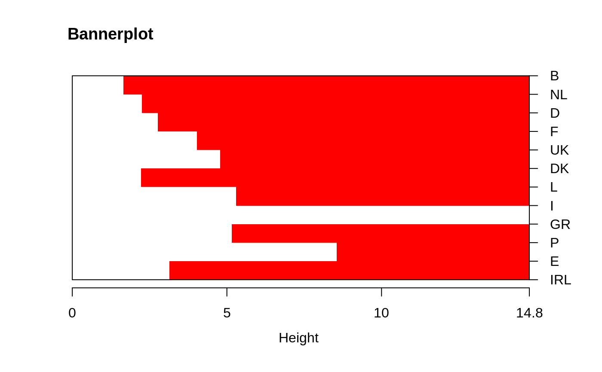

bannerplot.RdDraws a “banner”, i.e. basically a horizontal barplot
visualizing the (agglomerative or divisive) hierarchical clustering or
an other binary dendrogram structure.
bannerplot(x, w = rev(x$height), fromLeft = TRUE, main=NULL, sub=NULL, xlab = "Height", adj = 0, col = c(2, 0), border = 0, axes = TRUE, frame.plot = axes, rev.xax = !fromLeft, xax.pretty = TRUE, labels = NULL, nmax.lab = 35, max.strlen = 5, yax.do = axes && length(x$order) <= nmax.lab, yaxRight = fromLeft, y.mar = 2.4 + max.strlen/2.5, ...)
| x | a list with components |
|---|---|
| w | non-negative numeric vector of bar widths. |
| fromLeft | logical, indicating if the banner is from the left or not. |
| main,sub | main and sub titles, see |
| xlab | x axis label (with ‘correct’ default e.g. for
|
| adj | passed to |
| col | vector of length 2, for two horizontal segments. |
| border | color for bar border; now defaults to background (no border). |
| axes | logical indicating if axes (and labels) should be drawn at all. |
| frame.plot | logical indicating the banner should be framed;
mainly used when |
| rev.xax | logical indicating if the x axis should be reversed (as
in |
| xax.pretty | logical or integer indicating if
|
| labels | labels to use on y-axis; the default is constructed from
|
| nmax.lab | integer indicating the number of labels which is considered too large for single-name labelling the banner plot. |
| max.strlen | positive integer giving the length to which strings are truncated in banner plot labeling. |
| yax.do | logical indicating if a y axis and banner labels should be drawn. |
| yaxRight | logical indicating if the y axis is on the right or left. |
| y.mar | positive number specifying the margin width to use when banners are labeled (along a y-axis). The default adapts to the string width and optimally would also dependend on the font. |
| ... | graphical parameters (see |
This is mainly a utility called from plot.agnes,
plot.diana and plot.mona.
